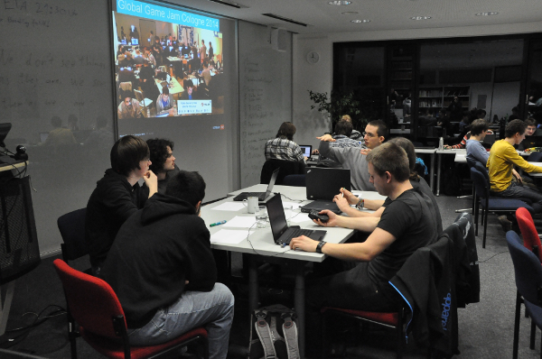
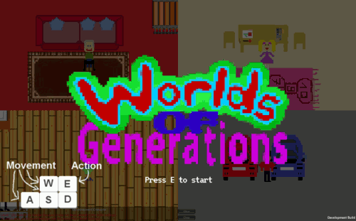
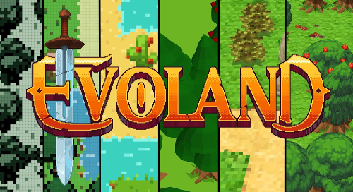
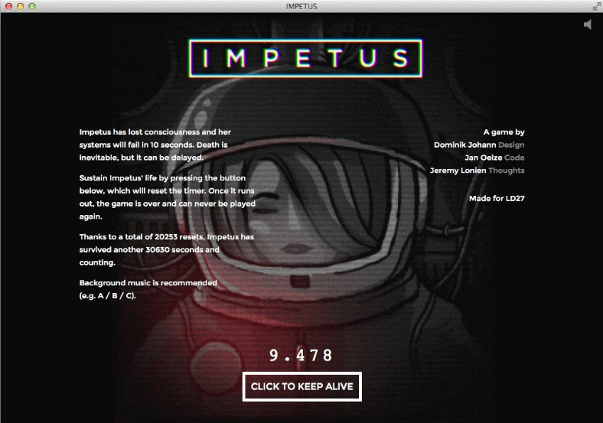
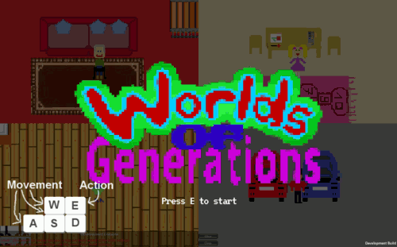
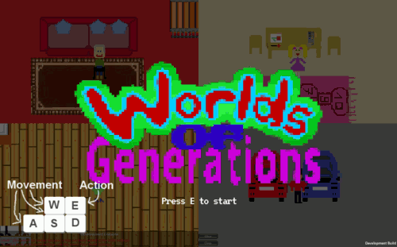

Game Jams
Simon Weiler
What is a game jam?
Build a game.
To a given theme.
In 24 - 72 hours.
Themes?

ludumdare.com/compo/
globalgamejam.org
Personal participations

Remarkable submissions


Why?
Learn
Get to know people
Fun
Question time!

 
